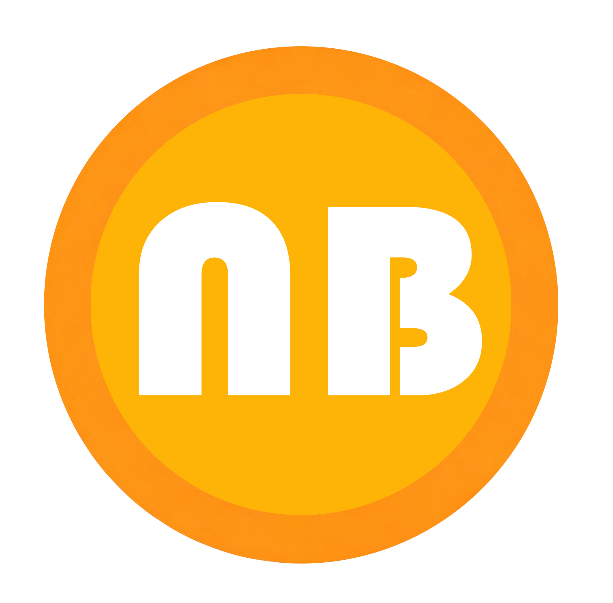

NiuBi (NB) is a BEP-20 token deployed on BNB Smart Chain. The protocol embeds its entire economic policy inside the smart contract: a 6% buy tax and a 10% sell tax are split between marketing, automatic liquidity provision, automatic token burn and BNB dividends for holders. Additional protections — anti-whale limits and a trade cooldown — are enforced on-chain and cannot be bypassed by users.
The contract source code is publicly verified on BscScan, all taxes are hard-coded at deployment, and the PancakeSwap liquidity provider (LP) tokens have been sent to the dead address, making the initial liquidity permanently irremovable.
Most tokens launched on decentralized exchanges fail their earliest buyers for the same reasons: liquidity is pulled without warning, tax rules change after purchase, or a few wallets accumulate enough supply to move the price at will. NiuBi was designed around contract-level constraints that remove the ability for anyone — including the deployer — to break these rules silently.
The design goals of NiuBi are:
| Parameter | Value |
|---|---|
| Token name | NiuBi |
| Symbol | NB |
| Blockchain | BNB Smart Chain (BSC), Chain ID 56 |
| Token standard | BEP-20 |
| Decimals | 18 |
| Total supply | 1,000,000,000 NB (fixed at deployment) |
| Contract address | 0xa9A69321F5fB01858702eF4Ae6d73364c3aa2148 |
| Primary DEX | PancakeSwap V2 (NB / BNB pair) |
| Router | 0x10ED43C718714eb63d5aA57B78B54704E256024E |
| Source code | Verified on BscScan |
| Liquidity status | LP tokens burned to 0x...dEaD |
Total supply is fixed at 1,000,000,000 NB. There is no mint function, no inflation and no hidden treasury allocation controlled by the deployer. Circulating supply only decreases over time, because part of every transaction is burned.
| Allocation | Rate | Function |
|---|---|---|
| Marketing | 2.5% | Project operations and promotion |
| Liquidity | 2.0% | Automatically added to the NB/BNB pool |
| Burn | 1.0% | Sent to the dead address permanently |
| Dividend | 0.5% | Redistributed to holders in BNB |
| Total | 6.0% |
| Allocation | Rate | Function |
|---|---|---|
| Marketing | 4.5% | Project operations and promotion |
| Liquidity | 3.0% | Automatically added to the NB/BNB pool |
| Burn | 2.0% | Sent to the dead address permanently |
| Dividend | 0.5% | Redistributed to holders in BNB |
| Total | 10.0% |
| Limit | Value | Share of supply |
|---|---|---|
| Maximum transaction | 5,000,000 NB | 0.5% |
| Maximum wallet holding | 15,000,000 NB | 1.5% |
| Swap-and-liquify threshold | 1,000,000 NB | 0.1% |
| Trade cooldown | 60 seconds | — |
When the accumulated liquidity allocation reaches the swap threshold, the contract sells half of that amount for BNB and pairs the remainder with it, adding the resulting liquidity to PancakeSwap. This continuously deepens the pool without any manual intervention and without withdrawing value from the pool.
The burn allocation of every qualifying transaction is transferred to
0x000000000000000000000000000000000000dEaD. Burned tokens are removed from
circulation permanently and can never be recovered by any party.
The dividend allocation is accumulated and distributed in BNB to all eligible holders using a proportional accumulator (the same model popularised by reflection-style tokens). A holder's claim grows with both the dividend volume generated by trading and the size of their balance. No staking, locking or claim transaction is required.
Every wallet is subject to the transaction and holding caps listed in section 3.3. During
the launch period, a 60-second cooldown between transfers from the same wallet prevents
high-frequency sniping and automated sandwich strategies. These limits are enforced inside
_transfer, so they apply equally to all non-excluded addresses.
The PancakeSwap LP tokens received when liquidity was created were transferred to the dead address. As a result, no address holds the LP position and liquidity can never be removed — the pool remains tradable for as long as BNB Smart Chain exists.
| Phase | Scope | Status |
|---|---|---|
| Phase 1 Foundation |
Contract development and deployment, source verification, PancakeSwap liquidity creation, LP burn | Completed |
| Phase 2 Visibility |
Official website, whitepaper, English documentation, BscScan token information and logo update, community channels | In progress |
| Phase 3 Discovery |
Listings on token data aggregators (CoinGecko, CoinMarketCap), broader community growth and content marketing | Planned |
| Phase 4 Expansion |
Additional utility and ecosystem features, prioritised through community discussion | Planned |
Roadmap items describe intentions, not guarantees. Timelines depend on community growth, market conditions and the outcome of third-party listing reviews.
Contract address for import:
0xa9A69321F5fB01858702eF4Ae6d73364c3aa2148NiuBi is a decentralized, community-oriented token with no venture capital backing, no guaranteed revenue model and no expectation of profit derived from the efforts of others. Before interacting with the contract, readers should understand the following risks:
Nothing in this document is investment advice, a solicitation, or an offer to sell securities in any jurisdiction. Every reader is responsible for their own due diligence and for compliance with the laws that apply to them.
| Resource | Link |
|---|---|
| Website | nb-token.com |
| support@nb-token.com | |
| BscScan | bscscan.com/token/0xa9A69321F5fB01858702eF4Ae6d73364c3aa2148 |
| PancakeSwap | Buy NB on PancakeSwap |